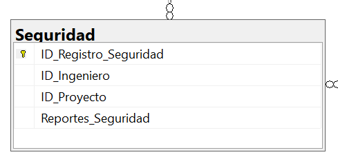
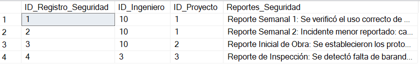

Imagen de la Tabla de Seguridad

Pertinencia de la Arquitectura de la Base de Datos
La arquitectura del subsistema de Seguridad e Higiene es pertinente porque permite llevar un control ordenado de los reportes realizados por los ingenieros en cada proyecto, facilitando la identificación de riesgos y medidas preventivas.
Propósito
El propósito de esta tabla es registrar los reportes de seguridad de cada ingeniero asociados a proyectos específicos, garantizando un historial confiable y accesible.
Campos de la Tabla
- ID_Registro_Seguridad: Identificador único de cada reporte de seguridad.
- ID_Ingeniero: Identificador del ingeniero responsable del reporte.
- ID_Proyecto: Identificador del proyecto donde se genera el reporte.
- Reportes_Seguridad: Descripción detallada de observaciones o incidencias encontradas.
Normalización
1NF:
Todas las columnas contienen valores atómicos, sin listas ni duplicados en un solo campo.
2NF:
Todos los atributos dependen de la clave primaria (ID_Registro_Seguridad).
3NF:
No existen dependencias transitivas, ya que los datos de ingenieros y proyectos pueden normalizarse en tablas externas.
Código SQL para Crear la Tabla
CREATE TABLE Seguridad (
ID_Registro_Seguridad INT PRIMARY KEY IDENTITY(1,1),
ID_Ingeniero INT NOT NULL, -- Referencia al trabajador con puesto de Ing. de Seguridad
ID_Proyecto INT NOT NULL,
Reportes_Seguridad NVARCHAR(MAX),
CONSTRAINT FK_Seguridad_Ingeniero FOREIGN KEY (ID_Ingeniero) REFERENCES Trabajadores(ID_Trabajador) ON DELETE CASCADE,
CONSTRAINT FK_Seguridad_Proyecto FOREIGN KEY (ID_Proyecto) REFERENCES Proyectos(ID_Proyecto) ON DELETE CASCADE
);
GO
Código SQL para Insertar Registros
INSERT INTO Seguridad (ID_Ingeniero, ID_Proyecto, Reportes_Seguridad)
VALUES
(10, 1, 'Reporte Semanal 1: Se verificó el uso correcto de EPP (Equipo de Protección Personal). No se reportaron incidentes. Se recomienda reforzar señalización en área de excavación.'),
(10, 1, 'Reporte Semanal 2: Incidente menor reportado: caída de herramienta desde un andamio sin consecuencias. Se realizó capacitación de aseguramiento de herramientas.'),
(10, 2, 'Reporte Inicial de Obra: Se establecieron los protocolos de seguridad y las rutas de evacuación. Se realizó inspección de maquinaria y equipo.'),
(3, 3, 'Reporte de Inspección: Se detectó falta de barandales en el segundo nivel. Se detuvo la actividad en la zona hasta su correcta instalación.');
GO
Imagen de la Tabla de Seguridad
